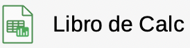
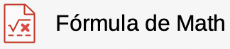

T03: LibreOffice¶
A continuación se describe en detalle el software LibreOffice.
Suite Ofimática LibreOffice¶

Suite LibreOffice¶ |
[1] LibreOffice es una suite de productividad de oficina de código abierto, disponible de forma gratuita, que es compatible con otras suites de oficina y está disponible en una variedad de plataformas. Su formato de archivo nativo es Open Document Format (ODF) y puede abrir y guardar documentos en muchos formatos, incluidos los utilizados por varias versiones de Microsoft Office.
La suite de LibreOffice esta compuesta por las siguientes herramientas:
El procesador de textos
Writer.La hoja de cálculo
Calc.El programa de presentaciones
Impress.El programa de dibujo vectorial
Draw.La base de datos
Base.El editor de ecuaciones
Math.
LibreOffice es una suite ofimática multi-plataforma, lo que quiere decir que se puede ejecutar en diferentes plataformas y sistemas operativos. Por consiguiente usted puede disfrutar del mismo programa en Windows, GNU/Linux o MacOS, facilitando la portabilidad entre diferentes sistemas de los documentos generados.
Entidades que usan LibreOffice¶
[2] Millones de personas utilizan LibreOffice todos los días en sus hogares, negocios, organizaciones benéficas y sectores gubernamentales. De entre estos grupos de usuarios pueden destacarse:
País |
Descripción |
|---|---|
FRANCIA |
El equipo de trabajo interministerial para el software libre del Gobierno francés, ejecuta LibreOffice en aproximadamente 500,000 equipos. El software se emplea en varios ministerios, incluidos los de Energía, Defensa, Agricultura y Educación. |
ESPAÑA |
La administración de la comunidad autónoma de Valencia, en España, ha instalado LibreOffice en 120,000 equipos. Con esto, la administración ha ganado independencia frente a proveedores de TI y ha disminuido los gastos en licencias de software privativo. |
ITALIA |
El Ministerio de Defensa de Italia se encuentra en un proceso de transición hacia LibreOffice y el formato OpenDocument (ODF) en más de 100,000 equipos. El Ministerio, asimismo, ha desarrollado cursos en línea para ayudar con el cambio a LibreOffice. |
ALEMANIA |
En Alemania, la ciudad de Múnich ha migrado más de 15,000 equipos a LibreOffice. Esto forma parte de una transición más ambiciosa hacia el software libre y de código abierto (FOSS), que incluye el sistema operativo GNU/Linux. |
TAIWAN |
El Ministerio de Finanzas de Taiwán ha instalado LibreOffice en más de 24,000 PC. Con esta iniciativa, el formato estandarizado OpenDocument está convirtiéndose en la norma para el intercambio de datos entre los diversos departamentos. |
BRASIL |
En Brasil, la UNESP ―Universidade Estadual Paulista― ha realizado más de 10,000 instalaciones de LibreOffice como parte de una migración general hacia el software libre y de código abierto, la cual incluye el sistema operativo GNU/Linux. |
COLOMBIA |
??? |
Herramientas de LibreOffice¶
[1] A continuación se explican las diferentes herramientas de LibreOffice:
LibreOffice Writer (procesador de textos)¶
LibreOffice Writer¶ |
{kind=link}
Writer es una herramienta rica en funciones para crear cartas, libros, informes, boletines, folletos y otros documentos. Puede insertar gráficos y objetos de otros componentes de LibreOffice en documentos de Writer.
Writer puede exportar archivos a HTML, XHTML, XML, PDF y EPUB, puede guardar archivos en muchos formatos incluidas varias versiones de archivo de Microsoft Word y conectarse con su cliente de correo electrónico.
LibreOffice Calc (hoja de cálculo)¶
 LibreOffice Calc¶ |
{kind=link}
Calc tiene todas las funciones avanzadas de análisis, gráficos y toma de decisiones que se esperan de una hoja de cálculo de alta gama. Incluye más de 500 funciones para operaciones financieras, estadísticas y matemáticas, entre otras. El Gestor de escenarios proporciona un análisis de «qué pasaría si».
Calc genera gráficos en 2D y 3D, que se pueden integrar en otros documentos de LibreOffice. También puede abrir y trabajar y guardar hojas de cálculo de Microsoft Excel y otros formatos de hoja de cálculo, así como exportar hojas de cálculo a varios formatos, como archivos de valores separados por comas (CSV), PDF y HTML.
LibreOffice Impress (presentaciones)¶

LibreOffice Impress¶ |
Impress proporciona todas las herramientas de presentación multimedia comunes, como efectos especiales, animaciones y herramientas de dibujo. Está integrado con las capacidades gráficas avanzadas de los componentes de LibreOffice Draw y Math.
Las presentaciones de diapositivas se pueden mejorar utilizando texto de efectos especiales de Fontwork, así como clips de sonido y vídeo. Impress puede abrir, editar y guardar presentaciones de Microsoft PowerPoint y también puede guardar su trabajo en numerosos formatos gráficos.
LibreOffice Draw (Dibujo vectorial)¶

LibreOffice Draw¶ |
Draw es una herramienta de dibujo vectorial que puede producir desde simples diagramas o diagramas de flujo hasta ilustraciones en 3D. Su característica Conectores Inteligentes le permite definir sus propios puntos de conexión. Puede usar Draw para crear dibujos y emplearlos en cualquiera de los componentes de LibreOffice, y puede crear su propia imagen prediseñada para luego agregarla a la Galería.
Draw puede importar archivos gráficos en muchos formatos y guardar su trabajo en muchos formatos, incluidos PNG, GIF, JPEG, BMP, TIFF, SVG, HTML, PDF y WebP.
LibreOffice Base (Bases de datos)¶

LibreOffice Base¶ |
Base proporciona herramientas para el trabajo diario de bases de datos dentro de una interfaz sencilla. Puede crear y editar formularios, informes, consultas, tablas, vistas y relaciones, por lo que administrar una base de datos relacional es muy similar a otras aplicaciones de bases de datos populares.
Base proporciona muchas características nuevas, como la capacidad de analizar y editar relaciones desde una vista de diagramas. Base incorpora dos motores de bases de datos relacionales, HSQLDB y Firebird. También puede utilizar PostgreSQL, dBASE, Microsoft Access, MySQL, Oracle o cualquier base de datos compatible con ODBC o JDBC. Base también proporciona soporte para un subconjunto de ANSI-92 SQL.
LibreOffice Math (Editor de fórmulas)¶
 LibreOffice Math¶ |
{kind=link}
Math es un editor de fórmulas o ecuaciones. Puede usarlo para crear ecuaciones complejas que incluyen símbolos o caracteres que no están disponibles en conjuntos de fuentes estándar. Si bien se usa más comúnmente para crear fórmulas en otros documentos, como archivos Writer e Impress, Math también puede funcionar como una herramienta independiente. Puede guardar fórmulas en el formato estándar de Lenguaje de Marcado Matemático (MathML) para incluirlas en páginas web u otros documentos creados con otros programas.
Ventajas de LibreOffice¶
[1] A continuación se presentan las ventajas que tiene el uso de LibreOffice frente a otras suites ofimáticas:
Sin tarifas de licencia: LibreOffice es gratuito para que cualquiera lo use y distribuya sin coste alguno. LibreOffice incluye muchas funciones (como exportación a PDF) de manera gratuita y que en otras suites de oficina son de pago. Con LibreOffice no hay cargos ocultos ni ahora, ni en el futuro.
Código abierto: Puede distribuir, copiar y modificar el software tanto como desee, de acuerdo con las licencias de código abierto de LibreOffice.
Multiplataforma: LibreOffice se ejecuta en varias arquitecturas de hardware y en varios sistemas operativos, como Microsoft Windows, macOS y Linux.
Amplio soporte de idiomas: La interfaz de usuario de LibreOffice, diccionarios ortográficos, separación de sílabas y sinónimos, están disponibles en más de 100 idiomas y dialectos. LibreOffice también ofrece compatibilidad con los idiomas de diseño de texto complejo (CTL) y de escritura de derecha a izquierda (RTL) (como urdu, hebreo y árabe).
Interfaz de usuario consistente: Todos los componentes tienen una apariencia similar, lo que los hace fáciles de usar y aprender.
Integración: Los componentes de LibreOffice están integrados entre sí, todos comparten un corrector ortográfico común y otras herramientas, que se utilizan de forma coherente en toda la suite. Por ejemplo, las herramientas de dibujo disponibles en Writer también se encuentran en Calc, y con versiones similares pero mejoradas en Impress y Draw.
No necesita saber qué aplicación se utilizó para crear un archivo en particular. Por ejemplo, puede abrir un archivo Draw desde Writer; se abrirá automáticamente en Draw.
Granularidad: Por lo general, si cambia una opción, afecta a todos los componentes. Sin embargo, las opciones de LibreOffice se pueden configurar en el ámbito de componente o incluso en el ámbito de documento.
Compatibilidad de archivos: Además de sus formatos nativos (OpenDocument), LibreOffice puede y guardar archivos en muchos formatos comunes, entre otros: Microsoft Office, HTML, XML, WordPerfect, Lotus 1-2-3 y PDF.
Sin bloqueo de proveedores: LibreOffice utiliza OpenDocument, un formato de archivo XML (eXtensible Markup Language) desarrollado como estándar industrial por OASIS (Organization for the Advancement of Structured Information Standards). Estos archivos se pueden descomprimir y leer fácilmente con cualquier editor de texto, y su estructura es abierta y está documentada.
Usted tiene voz: Las mejoras, las correcciones de software y las fechas de lanzamiento están impulsadas por la comunidad. Puede unirse a la comunidad e influir sobre el curso de LibreOffice.